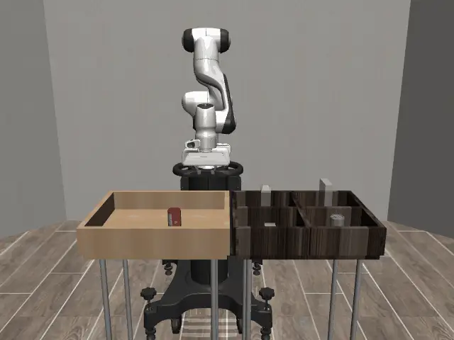

Action Chunking with Transformers is a robotics policy implemented using a Conditional Variational Autoencoder architecture. It consists of an CVAE encoder used only in training, and a decoder used in both training and inference. It predicts "chunks" of actions.
Introduction to Variational Auto Encoders:
An autoencoder is a model that can learn useful representations of things in a lower dimensional space. It downtransforms a vector to a lower dimensional latent representation, $z$, using an encoder, and then tries to use $z$ to reconstruct the original input using a decoder. Through this process, the autoencoder can learn useful latent representations of an input.
A VARIATIONAL auto encoder does the same thing. However, rather than learning a single latent vector representation, $z$, it can learn a posterior distribution $q(z|x)$, and sample latent vectors to generate data. The posterior distribution, $q(z|x)$, gives us a distribution of latent variables $z$, conditioned on our input, $x$.
In ACT, we can think of the "data" we generate as the "actions".
ACT Loss:
$$ \text{Reconstruction Loss} + \beta \cdot \text{KL Loss} $$
Reconstruction Loss:
$$ -\mathbb{E}_{z \sim q}\left[\log p(x|z, c)\right] $$
In the ACT paper, the authors used L1 Loss, essentially just $|x_{pred} - x_{actual}|$.
KL Loss:
$$ D(q(z|x,c) || p(z)) $$
$p(z)$ is our prior distribution.
KL Divergence:
KL Divergence measures how different one probability distribution is from another (and it isn't symmetric).
In order to get our posterior distribution to be as similar to the standard normal, we add KL divergence to our loss, encouraging our learned $q(z|x,c)$ to be similar to the standard normal.
Conditional Variational Auto Encoders:
Conditional Variational Autoencoders are conditioned on an extra conditioning variable, c. Conceptually, this is $x, c \rightarrow q(z|x,c) \rightarrow p(x|z, c)$ to generate $x$. In ACT, this conditioning variable is our state information (joint positions, images). Our $x$ is the expert action chunk.
The ACT architecture:
The ACT architecture consists of 2 parts. The CVAE encoder and the CVAE decoder. Both of these are implemented using a transformer.
DURING TRAINING:
The encoder takes in the current joint position and the expert action chunk, and outputs the mean and variance of our posterior distribution, $q(z|x, c)$.
The paper did not feed in images to the encoder for faster training time.
We then feed this $z$ latent variable to our decoder, along with our camera images and joint position.
Both the latent variable and the joint position are projected to a dimension of 512. In vae.py, this is set through the res_token_dim parameter.
The images are fed through a CNN encoder, and become "image tokens", also of dimension 512. These image tokens also have 2d positional embeddings added.
This decoder is implemented in an encoder decoder transformer archicture.
We feed it the latent variable $z$, along with the images from our cameras and our joint positions. This goes through a transformer encoder.
Then, we create a $k$ size positional embedding, where $k$ is the size of our action chunk. This gets fed to the decoder. Within the transformer layer, the decoder's cross attention mechanism works with the encoders ouput of the image, joint position, and latent variable embeddings, meaning that each positional embedding can attend to the encoders information.
After the positional embeddings go through our decoder, they get projected to our action space, and become the action chunk we predict.
What is the purpose of z?
$z$ is a style variable. It allows the model to learn the different variations in our human demonstration data. For example, for a self driving car, there may be two valid ways to avoid an obstacle. Going left, or going right. Without a style variable, our model may end up averaging both of these valid actions, resulting in the car going straight, and crashing. With $z$, we can model the multimodality of both of these actions (through different $z$ variable for each).
In ACT, $z$ gives us the "style" of the action chunk we are training on. At test time, we set $z = 0$. This is the mean of our prior distribution of $z$, the standard Gaussian (which we go towards using our KL loss).
Why action chunking?
In CS185 Imitation Learning lecture, they derived the fact that error increases quadratically with horizon. The paper proposes that, in order to reduce the effective horizon (and thus compounding errors), we do action chunking. In imitation learning, every small error we make means that we slightly drift away from our training distribution. Distributional shift is when our training distribution is different from our teste distribution. By chunking our actions, we reduce the effective horizon (from $H$ to $H/k$, where $k$ is the action chunk size).
However, this hypothesis is actually discussed further in a later paper. In "Why Does Action Chunking Improve Behavioral Cloning Performance in Robotic Control?", the paper found that 2 of the hypothesis for WHY action chunking works better (modeling non-Markovian human behavior and horizon reduction, which was explained above), can also be captured by a delayed policy. A delayed policy predicts a current action using an older observation and executes one action at a time.
Note:
Human demonstrations have non-Markovian behavior, since observations and actions from previous time steps provide useful information about what the next action should be. For example, when a human grips a drawer handle, they may pause for several timesteps before pulling. Because the current observation changes very little during the pause, knowing how long the demonstrator has already been paused can be necessary to predict when they will start pulling. This makes the behavior non-Markovian. They found that action chunking does model this better than a Markovian policy, but so does a "delayed-policy".
Regarding compounding errors, the paper found that a delayed policy that does not reduce the horizon (because it executes actions one at a time) also reduced compounding errors, meaning that the main reason for the reduction of compounding error was the conditioning of our predicted action on older observations, and not the horizon reduction. Intuitively, the paper explains that earlier states have probably compounded less error than later states, resulting in more accurate predictions. Finally, they discovered that one benefit of action chunking was the "implict ensembling". Essentially, an action chunking model can learn multiple temporal relations. For example: $a_t|o_t$ for one chunk, $a_t|o_{t-1}$ for another chunk, all the way to $a_t|o_{t-k + 1}$ for the kth chunk. These are DIFFERENT predictions for the SAME action ($a_t$), since action $a_t$ appears in overlapping chunks. In their experiments, they discovered that this ensembling affect was similar to an actual ensemble model (training multiple individual models then averaging their predictions). The paper argues that these explain why action chunking improves behavioral cloning performance.